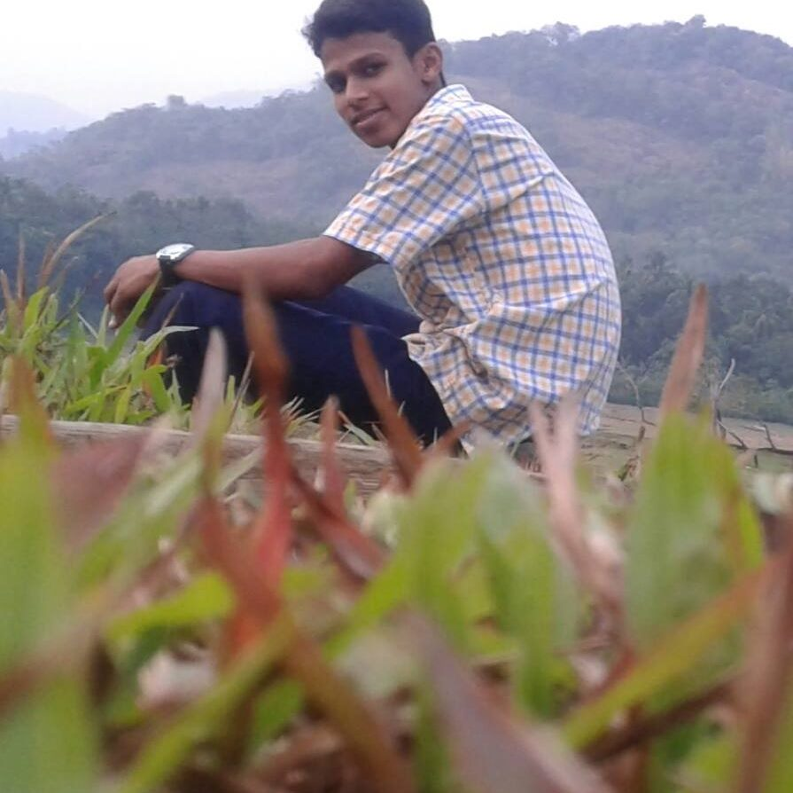

Who am I?
I am Ajwad Juman, student from Indian Institute of Technology Kharagpur. I have been learning my way to turn my promises into commitments . And throughout my journey I ensured I do strive for it. As a web and app developer, as a vector illustrator, as a science student, I ever tried to find my way.
In my social life, I was ever part of some or another organisations. Doing something worthy with an amazing team ever pleased me. I am part of SKSBV since my childhood. The organiser in me was persistently searching for a good team to build something good. Finally we found an ed-tech firm Examify. Being a sophomore, I am part of Web Team of Technology Adventure Society, IIT Kharagpur.